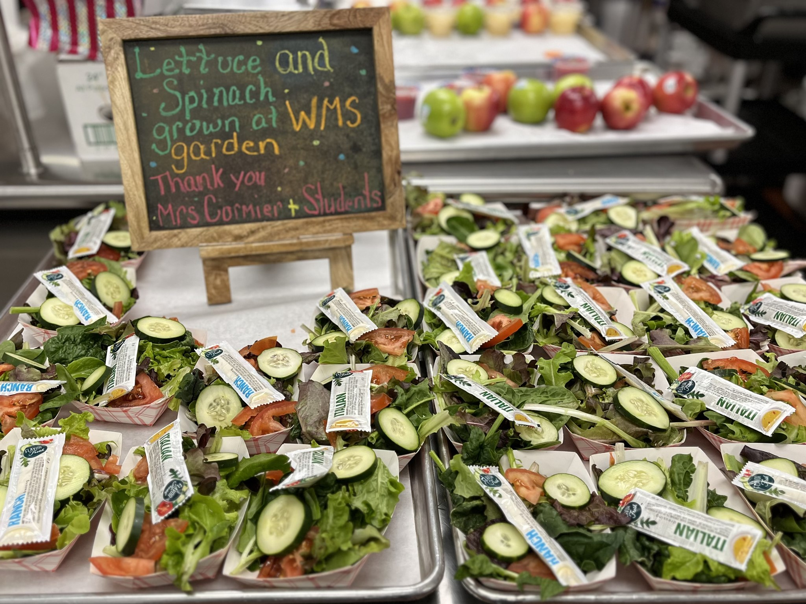

Practical resources, funding opportunities, and step-by-step guides for Massachusetts food service directors and nutrition staff ready to source local.
Food service directors across Massachusetts who've introduced local foods programs consistently see real, measurable wins in the cafeteria and beyond.
Students are more likely to eat foods they've seen grown nearby — local variety and freshness drive tray completion.
Buying regional crops at peak harvest is often cost-competitive with commodity pricing, especially through food hubs and direct farmer relationships.
Your purchasing dollars circulate in the Massachusetts and New England economy, sustaining the farms and fishing communities that feed our region.
Massachusetts seafood is a remarkable resource. Local catch is traceable, fresh, and a point of real pride for coastal communities.
Fresher produce and proteins that students recognize and enjoy means less ends up in the trash — a win for your budget and the planet.
Local sourcing doesn't have to mean more paperwork. Follow these steps — and use the templates and resources below — to make the process smooth and compliant.
Start with one or two high-volume items — apples, winter squash, salad greens, or local dairy — before scaling up. Aligning with the Harvest of the Month calendar makes menu planning easier.
Use the MA Farm to School local food map to connect with farms, food hubs, and seafood vendors already selling to institutions in your region.
MA Farm to School provides a downloadable sample RFQ template (Word format) built for child nutrition programs. It includes program principles, product spec sections, and language for the Northeast Food for Schools grant program.
The Procurement Resources guide links to recorded webinars and documentation for Child Nutrition professionals navigating local purchasing regulations. Over 20 years of Massachusetts experience in one place.
The USDA Food and Nutrition Service Farm to School program offers grants, training, and census data to support schools nationwide. MA programs can layer federal resources with the MA FRESH grant.
Taste tests are one of the most effective tools for increasing student acceptance of new local foods. Done well, they build excitement before a new menu item launches and give you real data on what students want to eat.
Adapted from Vermont Farm to School, this guide walks food service staff through planning, running, and evaluating taste tests for any grade level. Includes ballot templates, setup tips, and advice on connecting the cafeteria tasting to the classroom.
Combine taste tests with the Harvest of the Month framework to create a rhythm of monthly local food spotlights across the cafeteria, classroom, and community.
to the Guide
MA Farm to School's flagship program highlights a different locally grown crop each month, providing procurement templates, classroom lessons, cafeteria signage, and recipes — all coordinated so your school food program works in sync with educators.
Visit Harvest of the MonthFor districts looking for in-depth, individualized support, from program planning to evaluation, our team has worked with schools across Massachusetts for over 20 years.